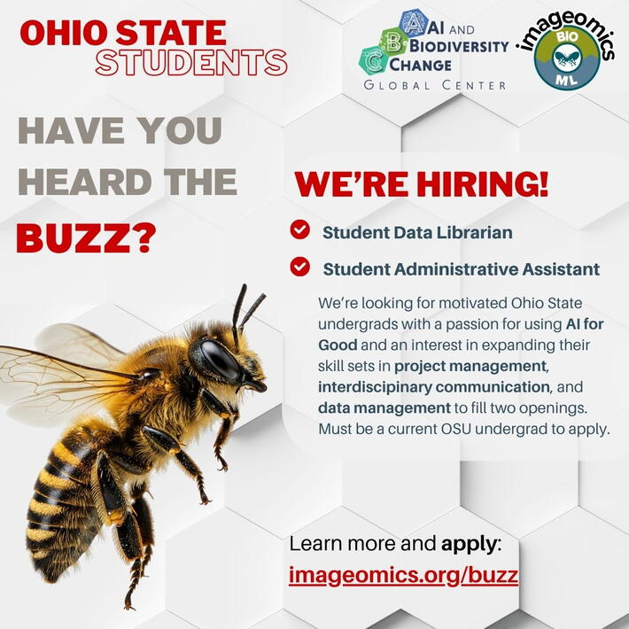

We’re looking for motivated Ohio State undergrads with a passion for using AI for Good and an interest in expanding their skill sets in project management, interdiscipinary communication, and data management to fill two openings. Must be a current OSU undergrad to apply. Federal Work Study eligible.
Student Data Librarian
This position is designed for a student eager to enhance their interdisciplinary communication and technical writing skills while gaining exposure to cutting-edge work in Machine Learning (ML) and Computer Vision (CV). The incumbent will have the opportunity to practice translating technical and domain-specific information into accessible formats for other researchers to understand and apply.
Additionally, the student will interact with and learn from a diverse group of researchers in Artificial Intelligence, Machine Learning, Computer Vision, and Biology, advancing their collaborative data management skills and applying theoretical knowledge to practical applications.
Student Applicants | Federal Work Study Applicants
Student Administrative Assistant
The Student Administrative Assistant will report to the Managing Director and assist with organization of administrative functions, and provide support for programmatic activities, and communications. The Student Administrative Assistant will have the opportunity to develop professional skills for effective project and event management, executive-level support functions, and marketing and communications while working in a dynamic setting with researchers across the globe working together to bring AI to the study of nature.